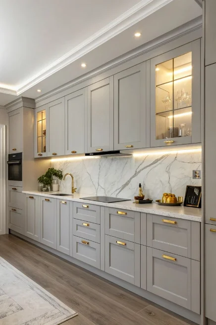
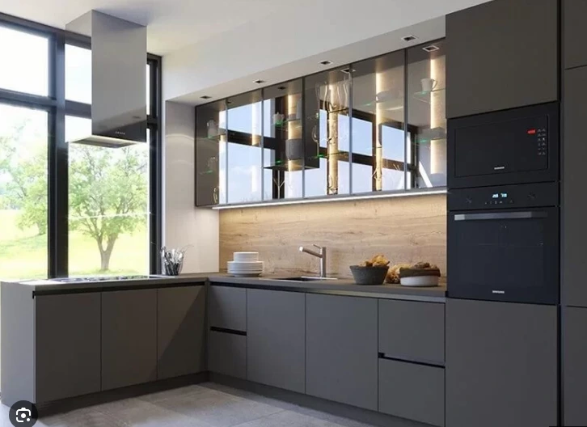
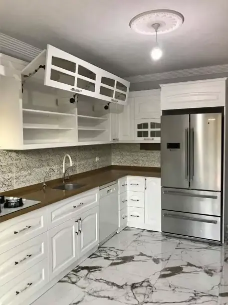
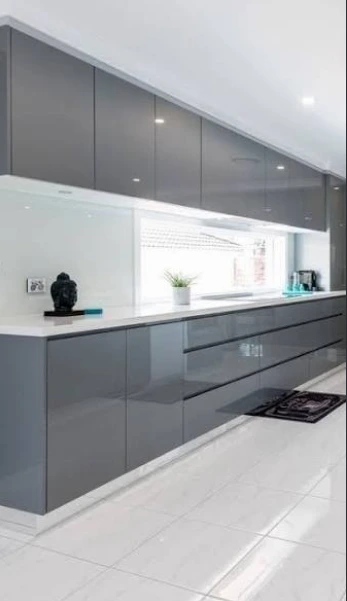
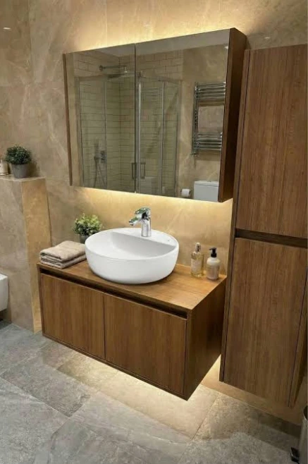
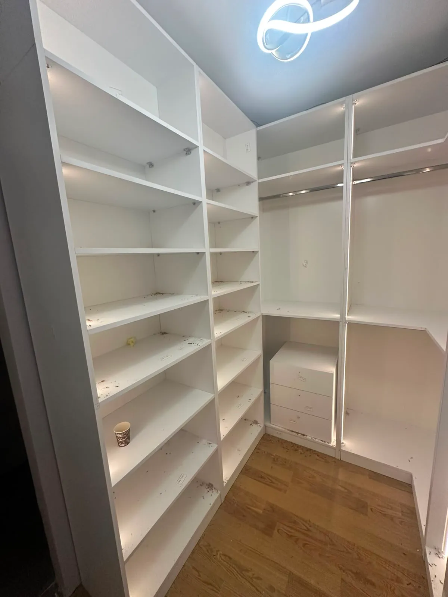
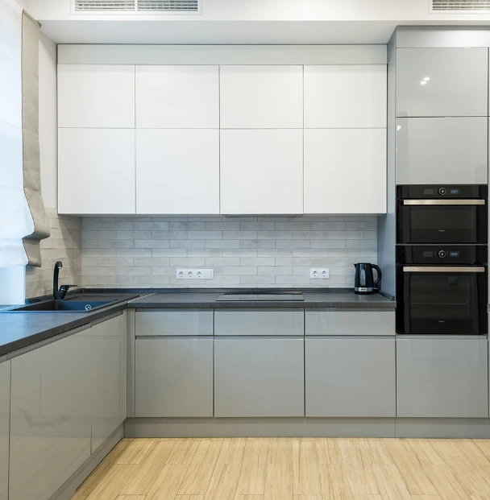
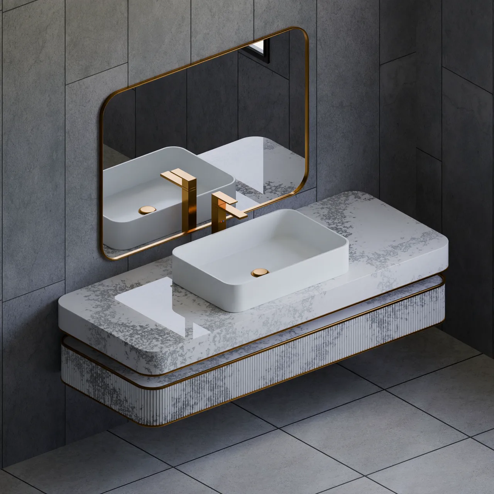
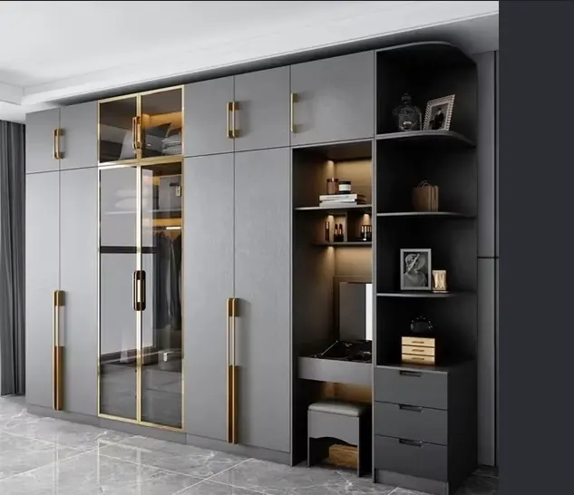

2026 Mutfak & Mobilya Tasarım Kataloğu.
Ümraniye ahşap atölyemizde imal edilen en yeni membran, lake, matplus ve akrilik mutfak serileri, suya dayanıklı banyo mobilyaları, füme camlı gardıroplar ve 2026 renk kartelası tek çatı altında.

2026 Mutfak ve Kapak Koleksiyonu E-Katalog
2026 Koleksiyonu2026 Mutfak & Kapak Canlı Kataloğu
Cihazınıza 94 MB indirmeden doğrudan tarayıcınız üzerinden tüm sayfaları, lake, membran, matplus ve akrilik modelleri yüksek çözünürlükle sayfa sayfa inceleyin.
Öne Çıkan Model & Projelerimiz
Mutfak, banyo ve giyinme odası projelerimizden seçkin örnekler. Her tasarım mekanınızın ölçüsüne göre sıfırdan üretilmektedir.

Toscana Country Çıtalı Mutfak
Mat ipek beyaz membran vakum pres kapak, antik pirinç kulplar ve masif meşe tezgah kombinasyonu ile sıcak country estetiği.

Kaşmir Minimal Kulpsuz Mutfak
Parmak izi bırakmayan nanoteknolojik Matplus yüzey, gizli Gola alüminyum kulp profili ve Çimstone pürüzsüz tezgah.

Milano Antrasit Ada Mutfak
Poliüretan fırın boyalı ipek mat lake kapaklar, porselen ada tezgah ve Blum Aventos kalkar kapak mekanizmaları.

Crystal Ultra Parlak Mutfak
Orijinal Senosan çizilmez akrilik paneller, cam berraklığında derin yansıma ve sararmazlık garantili modern kapak tasarımı.

Spa Serisi Asma Banyo Dolabı
Çanak lavabolu, LED dokunmatik buğu önleyici aynalı, su buharına ve neme %100 dayanıklı çok katmanlı lake boyalı modül.

Vogue Füme Camlı Ray Dolap
Alüminyum çerçeveli temperli füme cam kapaklar, dikey sensörlü LED aydınlatmalar ve kadife kaplamalı takı çekmeceleri.

Nova High Gloss Parlak Mutfak
UV lake korumalı parlak yüzeyler, bütçe dostu fiyat avantajı ve dar mutfakları geniş gösteren ferah aydınlık yansıma.

İpek Mat Lake Asma Banyo Dolabı
Poliüretan lake fırın boyalı neme dayanıklı gövde, mermer desen porselen tezgah ve LED dokunmatik aynalı asma banyo ünitesi.

Elegance Aynalı Sürgülü Gardırop
Dar odalar için kapak açılma payı gerektirmeyen, alt-üst çift frenli sessiz mekanizmalı ve bronz aynalı sürgülü dolap sistemi.
Katalogdaki Modellerimizin Atölyede Üretim Anları
E-Kataloğumuzda yer alan tüm mutfak, gardırop ve banyo tasarımları doğrudan kendi CNC parkurumuzda sıfırdan üretilmektedir.
2026 Mutfak & Mobilya Renk Kartelası
Atölyemizde en çok tercih edilen ipek mat lake renkleri ve membran/matplus dokuları. Dilediğiniz rengi atölyemizde birebir görebilirsiniz.
2026 Mutfak Dolabı Kapak & Fiyat Karşılaştırması
Mutfak yaptırmadan önce kapak tiplerinin dayanıklılık, nem direnci ve güncel metretül fiyatlarını karşılaştırın.
| Kapak Modeli | Yüzey Özelliği | Su & Nem Direnci | Çizilme Direnci | Temizlik | 2026 Ortalama Metretül Fiyatı | Garanti |
|---|---|---|---|---|---|---|
| Membran Kapak | Eksiz vakum pres folyo, çıtalı desen seçenekleri | Yüksek (Kenar bandsız tek parça) | Orta | Nemli bezle kolay | ₺11.000 - ₺12.500 | 5 Yıl |
| Matplus Kapak | Nanoteknolojik mat, ipeksi kadife hissiyatı | Yüksek (PUR tutkallı kenar) | Çok Yüksek (Anti-scratch) | Parmak izi ve leke tutmaz | ₺12.500 - ₺13.800 | 5 Yıl |
| Akrilik Kapak | Senosan ayna parlaklığında 1.4 mm akrilik plaka | Mükemmel | Yüksek | Pürüzsüz, tek silmeyle temiz | ₺11.800 - ₺13.200 | 5 Yıl |
| İpek Mat Lake | Poliüretan çok katmanlı fırın boyası, sınırsız RAL | Çok Yüksek (Su geçirmez boya zırhı) | Orta - Yüksek | Mikrofiber bez ile | ₺14.000 - ₺16.500 | 5 Yıl |
| High Gloss Kapak | UV lak kaplı ışıltılı parlak yüzey | İyi | Orta | Kolay silinebilir | ₺9.800 - ₺11.000 | 5 Yıl |
2026 Mutfak ve Mobilya Kataloğundan Model Seçerken Bilmeniz Gerekenler
Yeni bir mutfak dolabı veya gardırop yaptırırken sadece görsel tasarıma odaklanmak, uzun vadede şişme yapan gövdeler, kırılan menteşeler veya solan kapaklarla karşılaşmanıza neden olabilir. Mutfak Dolabınız olarak 15 yılı aşkın atölye tecrübemizle, estetik ile uzun ömürlü mühendisliği bir araya getiriyoruz.
1. Gövde Kalitesi Neden Kapaktan Daha Önemlidir?
Kataloglarda genellikle dış kapaklar ön plana çıkar. Ancak mutfağın iskeletini taşıyan gövdedir. Biz atölyemizde standart sunta kesinlikle kullanmıyoruz. Tüm alt, üst ve boy dolap gövdelerimizde 18 mm Kastamonu veya Egger E1 sertifikalı suya ve neme dirençli MDF-Lam kullanıyoruz. Böylece lavabo altı damlamalarında dahi dolaplarınız kabarmaz ve şişmez.
2. Mekanizma & Frenli Donanım Seçimi
Bir mutfak günde onlarca kez açılıp kapanır. Dolap kapaklarının çarpmaması, çekmecelerin 40 kg yük altında bile sessizce akması için Avusturya menşeili Blum ve yerli gururumuz Samet frenli menteşe ve tandembox ray sistemlerini standart olarak sunuyoruz.
3. 2026 Tasarım Trendleri: Minimalizm, Ada Mutfaklar ve Doğal Dokular
2026 mutfak mimarisinde karmaşık kulp kalabalığı yerini gizli Gola alüminyum profillere ve bas-aç (push-to-open) sistemlere bırakıyor. Renklerde ise sıcak kaşmir tonları, ada yeşili, antrasit gri ve doğal ahşap damarlı meşe kaplamalar mutfaklara otel lüksü katıyor.
2026 Kapak Kataloğumuzu İnceleyin
Membran, lake, akrilik ve matplus modellerimizin yer aldığı kapsamlı ürün kataloğumuzu telefonunuza veya bilgisayarınıza hemen indirin.
Katalog & Sipariş Sıkça Sorulan Sorular
Mutfak, banyo ve mobilya sipariş sürecinizle ilgili en çok sorulan soruların yanıtları.
Katalogdaki Tasarımlar İçin Anında Atölye Fiyatı Alın
Kataloğumuzda beğendiğiniz sayfa veya model numarasını, mutfak veya gardırop ölçülerinizle birlikte iletin; doğrudan imalat maliyetinizi 15 dakikada çıkaralım.